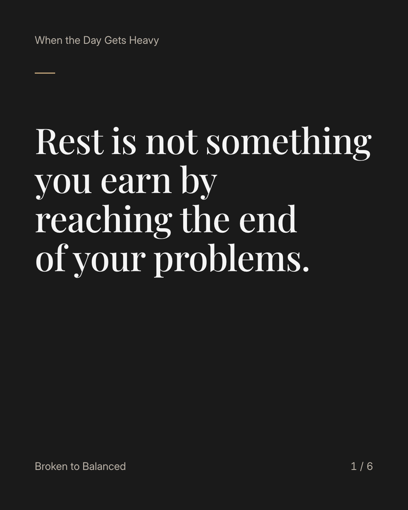
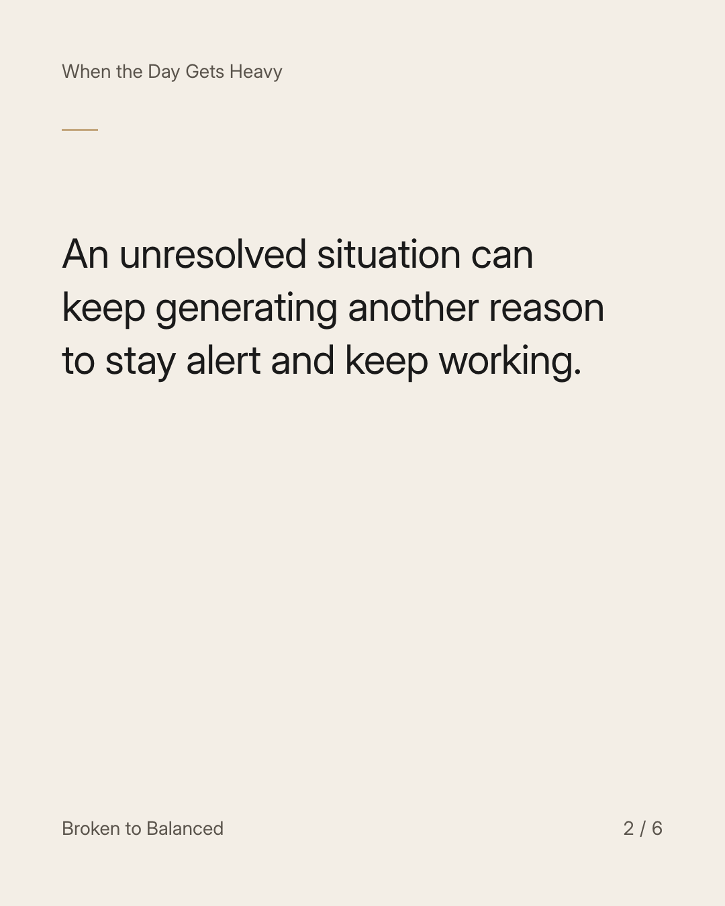
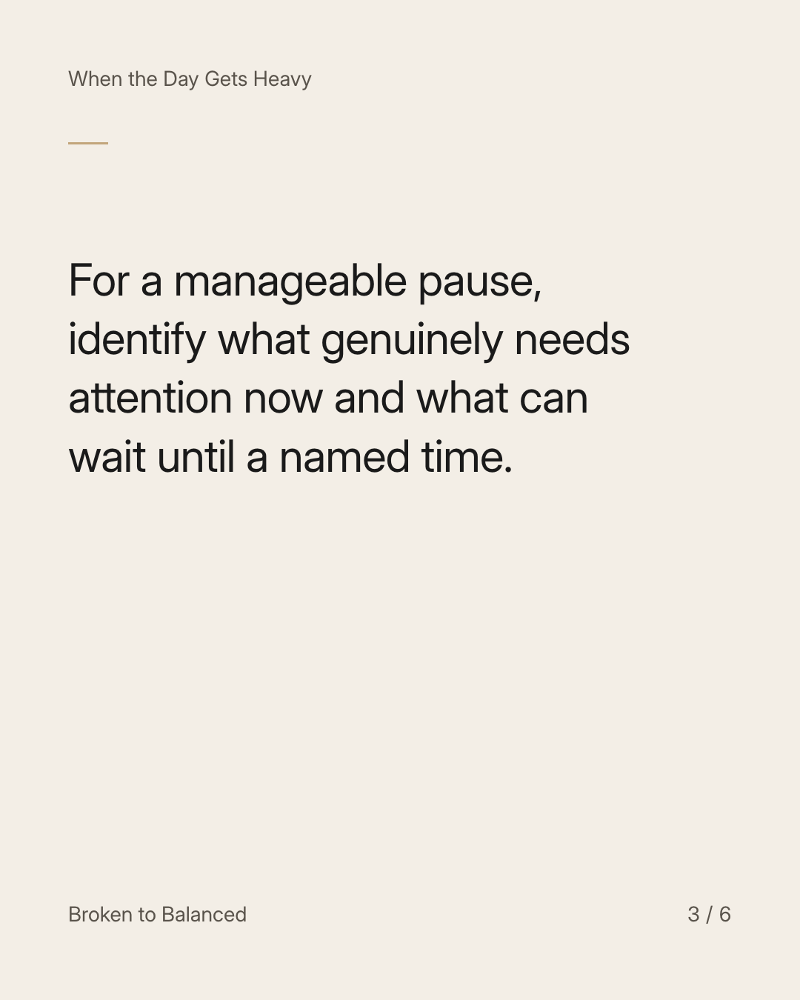
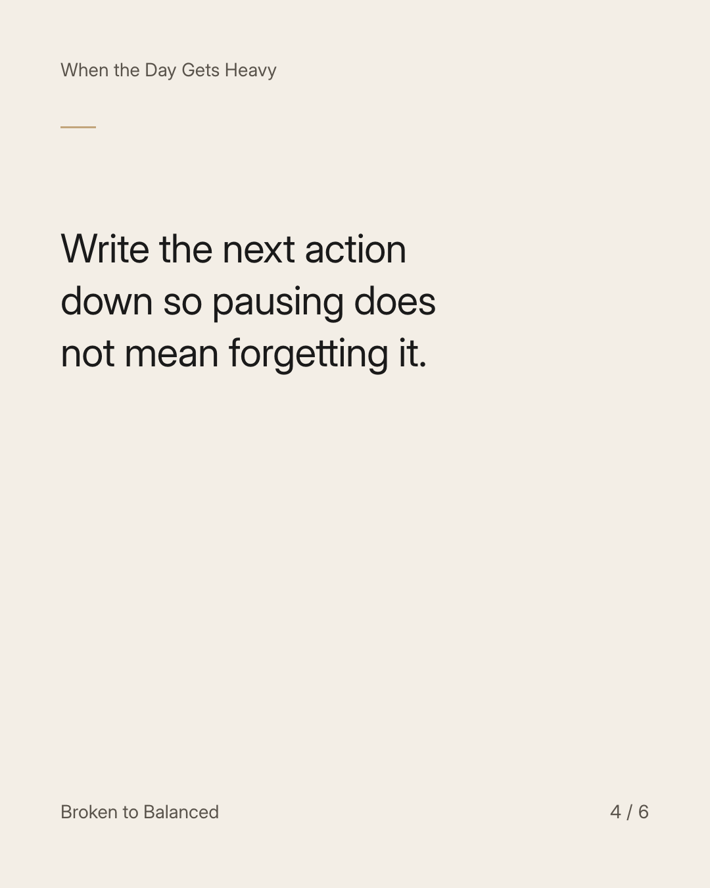
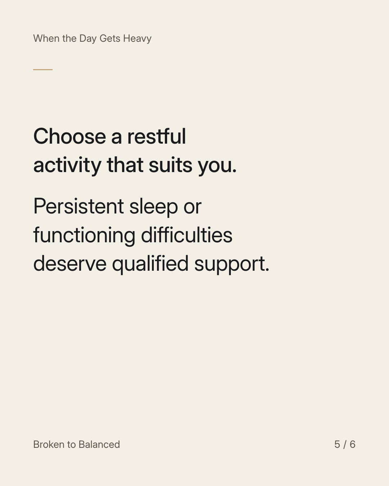
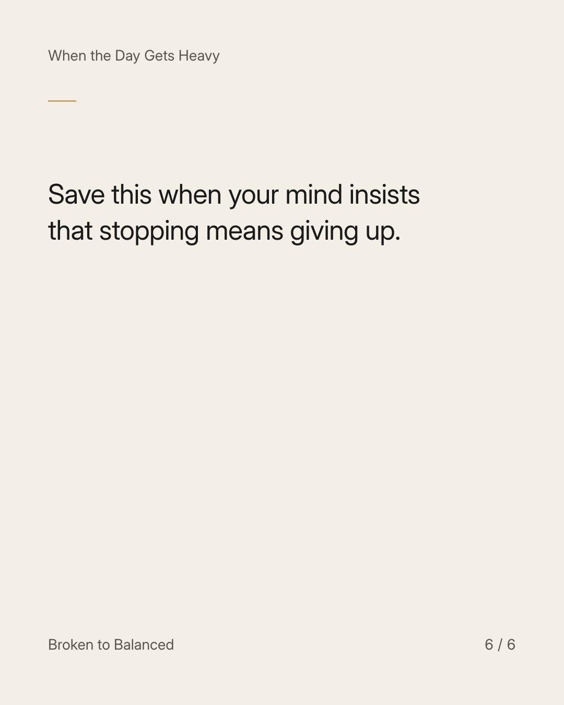

Exact text and accessibility text
Rest is not something you earn by reaching the end of your problems.
Slide 1 of 6. Rest is not something you earn by reaching the end of your problems.


Exact text and accessibility text
An unresolved situation can keep generating another reason to stay alert and keep working.
Slide 2 of 6. An unresolved situation can keep generating another reason to stay alert and keep working.


Exact text and accessibility text
For a manageable pause, identify what genuinely needs attention now and what can wait until a named time.
Slide 3 of 6. For a manageable pause, identify what genuinely needs attention now and what can wait until a named time.


Exact text and accessibility text
Write the next action down so pausing does not mean forgetting it.
Slide 4 of 6. Write the next action down so pausing does not mean forgetting it.


Exact text and accessibility text
Choose a restful activity that suits you. Persistent sleep or functioning difficulties deserve qualified support.
Slide 5 of 6. Choose a restful activity that suits you. Persistent sleep or functioning difficulties deserve qualified support.


Exact text and accessibility text
Save this when your mind insists that stopping means giving up.
Slide 6 of 6. Save this when your mind insists that stopping means giving up.
Exact caption
Plain-text fallback: select and copy the caption.